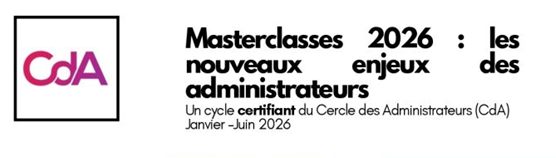

INSEAD
International Directors Program
Executive EducationVision très internationale
IFA - CDAInstitut Français des Administrateurs
Divers programmes certifiants

ADAE Ass. des Administrateurs et Dirigeants d'Entreprises
ESSEC
Women Be European Board Ready
Réservé aux femmes
M LYON BUSINESS SCHOOLCertificat
Voir présentation
Institute Of Directors
Formation pour la certification comme "Chartered Director" , pour les administrateurs de sociétés en UK